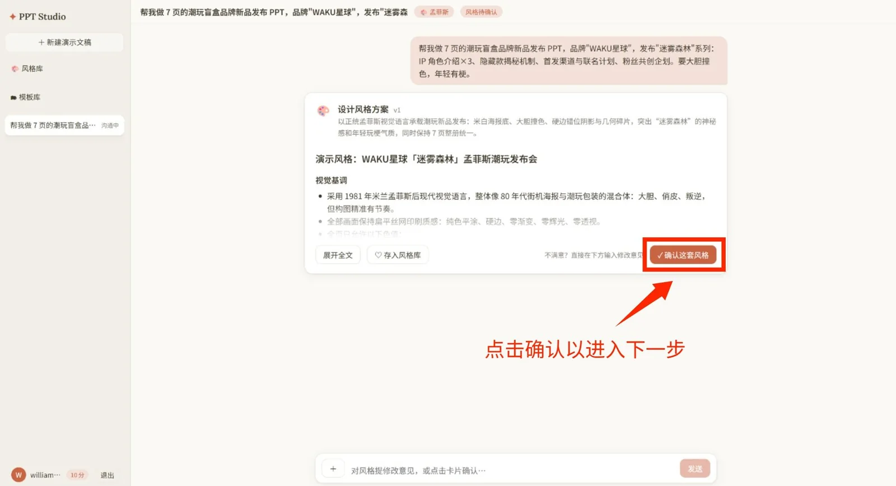
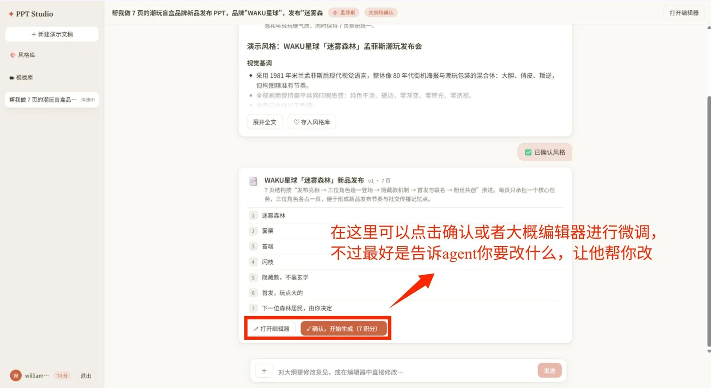
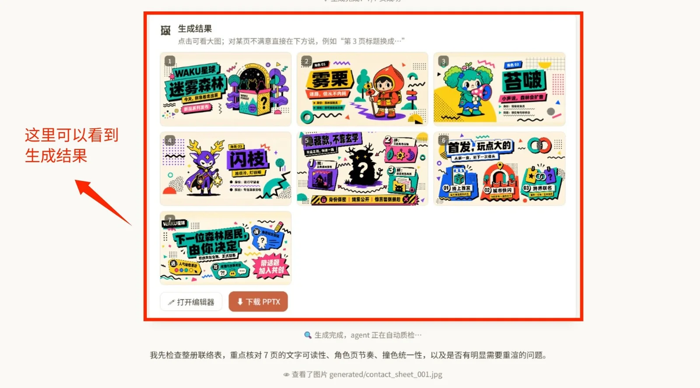

01 · Problem从资料到可以继续修改的文稿
做一套 PPT，通常要先读完零散资料，决定叙事顺序，再逐页排版。只把一句话交给图像模型，方向不合适时容易整套返工。另一类问题发生在已有文稿上：每页只剩一张图片，文字和图形都无法单独修改。
我把这两个需求接在同一个工作台中。输入可以是文字需求，也可以上传 Word、PDF、Excel、图片或已有 PPT；生成路线先得到整页图像并封装成 pptx，需要继续改字和元素时再进入图转可编辑流程。
02 · How it works先定方向，再逐页生成
生成路线把人工确认放在作画之前。我先让用户确认风格和逐页大纲，再生成、质检和按页修改。
- 描述需求输入主题并上传参考资料
- 确认风格选择或保存可复用的风格
- 确认大纲检查每页要讲的内容
- 逐页生成图像模型绘制整页
- 质检修改按页反馈，只重画相关页
- 导出文稿将页面封装为 pptx
图片型 PPT → 可编辑 pptx
另一条路线处理已有页面。用户可以选择完整重建，也可以只重建文字，最后对渲染结果人工复核。
- 导入页面上传图片型 PPT
- 去除文字保留可重用的背景
- 识别结构标出文字与视觉元素
- 裁切素材拆出图标和面板
- 求解字体估计字号与字距
- 重建校准生成 pptx 并对照渲染
03 · Features让修改落在需要修改的地方
- 逐页修改提出“修改第三页”时，只重画相关页面；内容未变的页面按 hash 跳过。
- 风格与模板确认后的风格和模板可以入库，供下一次生成复用。
- 任务进度前端通过 SSE 显示生成进度，工作台保留成本记录。
- 通道切换图像通道支持优先级、失败切换与冷却。
- 可编辑重建支持人工修订标注、断点续跑和按页重跑，并输出残差报告。
- 材料处理普通模式直接使用资料；高级模式让 agent 在一次性 Docker 沙盒里读取材料和运行 Python。
04 · Architecture网页工作台与两条处理管线
后端用 Python、FastAPI 和 SQLite。代码按接口、服务编排、agent／渲染／素材／可编辑管线、领域与基础设施分层；转换求解放在独立子进程。前端用 React 18 与 Vite，通过 SSE 接收进度。
文稿处理依赖 python-pptx、PyMuPDF、SciPy 和 OpenCV。可编辑稿的渲染按平台分路：Windows 使用 PowerPoint COM，Linux 和 macOS 使用 LibreOffice，字体候选也随平台变化。仓库附带前端构建产物，普通自部署不必另装 Node。
05 · Decisions三个实现取舍
把两次确认放在绘制前
先确认风格，再确认逐页大纲，能在生成整套图片之前发现方向和结构的问题。
先生成整页，再按需重建元素
整页图像适合快速形成统一画面；图片型输出本身难以局部编辑，所以我保留独立的图转可编辑流程，也提供只重建文字的轻量选择。
按平台选择渲染器
PowerPoint COM 与 LibreOffice 的环境条件不同。我在同一仓库保留两条平台路线，让可编辑稿的渲染校准能在相应系统上运行。
06 · Milestones公开仓库中的节点
- 仓库创建PPT Studio 公开仓库创建。
- 成本记录提交历史加入页面成本的记录与管理界面。
- 合并两条历史主应用与原先的 ppt-editable 历史合入当前仓库。
- 自部署入口提交一键启动、Docker、CI 和前端构建产物。
统计日期 2026-09-28：默认分支 211 次提交、10 stars、1 fork；提交数包含合并历史。未发现 GitHub Release。
07 · Screens生成前的两次确认，与生成后的页面


